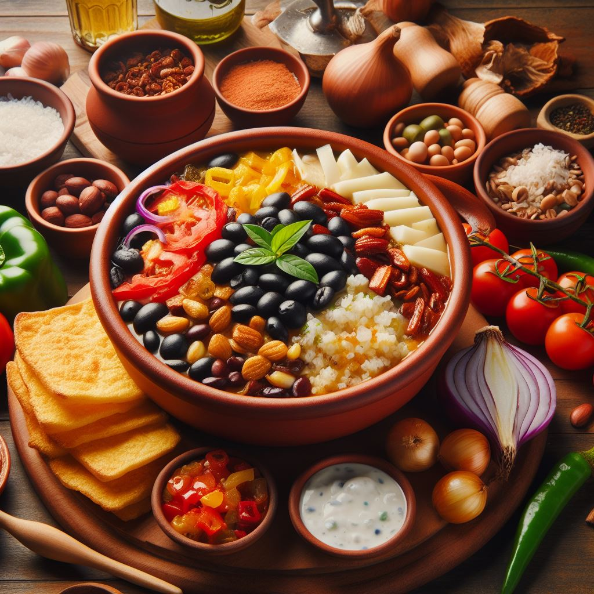

Elige tu destino gastronómico
Restaurante Tico Tradicional
Puntuación: 4.5/5 (Basada en 100 opiniones)
¡Disfruta de platos típicos costarricenses preparados con amor!
Marisquería Pura Vida
Puntuación: 4.8/5 (Basada en 150 opiniones)

¡Los mejores mariscos frescos de la costa costarricense!